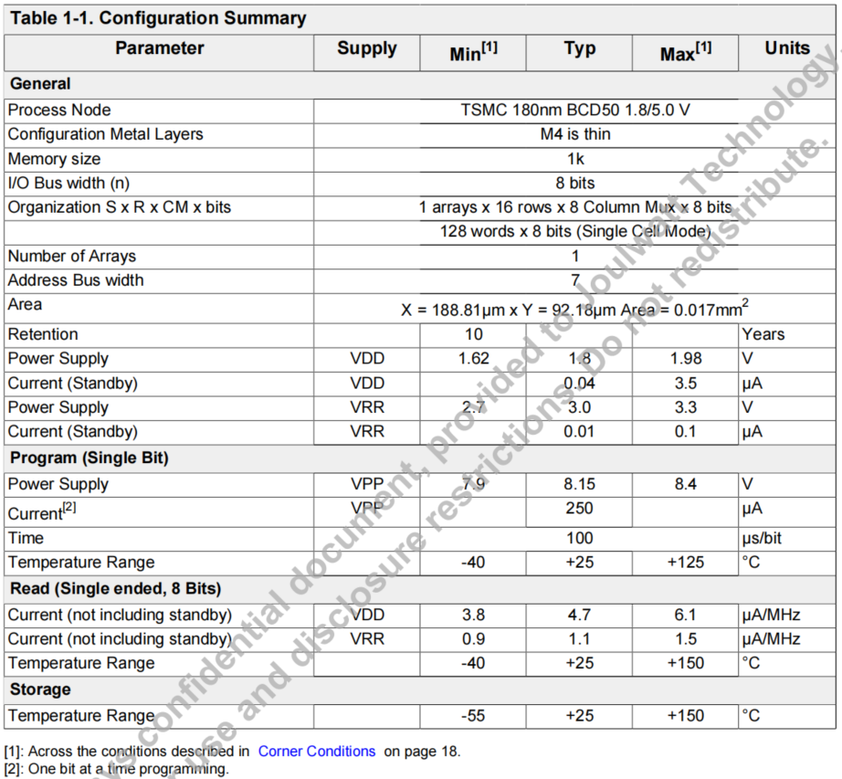
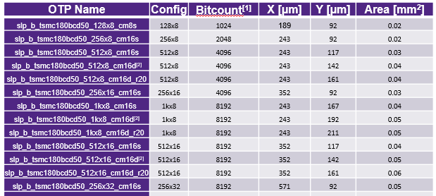

NVM-OTP
待确认
MACRO NAME: DesignWare slp_b_tsmc180bcd50_128x8_cm8s_ab 供电共有 VDD(1V8) VPP(8V18) VRR(3V) VREF(==VDD or external IO) , size 是 8bit
供电电压
两种供电方式 ，首先确认 IPS controls 是不是集成在IP 里面， 能否分离。如果使用IPS 供电那只需要提供VDD（1V8) 和 VDD_IO(5V)
位宽大小
jwq40260 spi/i2c 接口格式使用的是8+16+8(addr+data+crc),内部总线也是使用16位。如果使用的是16位的数据，那可以直接使用，否则需要数字逻辑转接匹配位宽。
